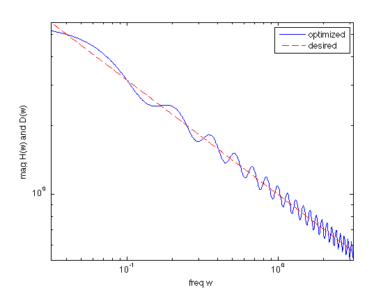

% "Filter design" lecture notes (EE364) by S. Boyd % "FIR filter design via spectral factorization and convex optimization" % by S.-P. Wu, S. Boyd, and L. Vandenberghe % (a figure is generated) % % Designs a log-Chebychev filter magnitude design given as: % % minimize max| log|H(w)| - log D(w) | for w in [0,pi] % % where variables are impulse response coefficients h, and data % is the desired frequency response magnitude D(w). % % We can express and solve the log-Chebychev problem above as % % minimize max( R(w)/D(w)^2, D(w)^2/R(w) ) % s.t. R(w) = |H(w)|^2 for w in [0,pi] % % where we now use the auto-correlation coeffients r as variables. % % As an example we consider the 1/sqrt(w) spectrum shaping filter % (the so-called pink-noise filter) where D(w) = 1/sqrt(w). % Here we use a logarithmically sampled freq range w = [0.01*pi,pi]. % % Written for CVX by Almir Mutapcic 02/02/06 % parameters n = 40; % filter order m = 15*n; % frequency discretization (rule-of-thumb) % log-space frequency specification wa = 0.01*pi; wb = pi; wl = logspace(log10(wa),log10(wb),m)'; % desired frequency response (pink-noise filter) D = 1./sqrt(wl); % matrix of cosines to compute the power spectrum Al = [ones(m,1) 2*cos(kron(wl,[1:n-1]))]; % solve the problem using cvx cvx_begin variable r(n,1) % auto-correlation coefficients variable R(m,1) % power spectrum % log-chebychev minimax design minimize( max( max( [R./(D.^2) (D.^2).*inv_pos(R)]' ) ) ) subject to % power spectrum constraint R == Al*r; cvx_end % check if problem was successfully solved disp(['Problem is ' cvx_status]) if ~strfind(cvx_status,'Solved') return end % spectral factorization h = spectral_fact(r); % figures figure(1) H = exp(-j*kron(wl,[0:n-1]))*h; loglog(wl,abs(H),wl,D,'r--') set(gca,'XLim',[wa pi]) xlabel('freq w') ylabel('mag H(w) and D(w)') legend('optimized','desired')
Calling Mosek 9.1.9: 4200 variables, 1841 equality constraints
For improved efficiency, Mosek is solving the dual problem.
------------------------------------------------------------
MOSEK Version 9.1.9 (Build date: 2019-11-21 11:32:15)
Copyright (c) MOSEK ApS, Denmark. WWW: mosek.com
Platform: MACOSX/64-X86
Problem
Name :
Objective sense : min
Type : CONIC (conic optimization problem)
Constraints : 1841
Cones : 600
Scalar variables : 4200
Matrix variables : 0
Integer variables : 0
Optimizer started.
Presolve started.
Linear dependency checker started.
Linear dependency checker terminated.
Eliminator started.
Freed constraints in eliminator : 0
Eliminator terminated.
Eliminator - tries : 1 time : 0.00
Lin. dep. - tries : 1 time : 0.00
Lin. dep. - number : 0
Presolve terminated. Time: 0.01
Problem
Name :
Objective sense : min
Type : CONIC (conic optimization problem)
Constraints : 1841
Cones : 600
Scalar variables : 4200
Matrix variables : 0
Integer variables : 0
Optimizer - threads : 8
Optimizer - solved problem : the dual
Optimizer - Constraints : 1800
Optimizer - Cones : 601
Optimizer - Scalar variables : 3642 conic : 1842
Optimizer - Semi-definite variables: 0 scalarized : 0
Factor - setup time : 0.01 dense det. time : 0.00
Factor - ML order time : 0.00 GP order time : 0.00
Factor - nonzeros before factor : 2.92e+04 after factor : 7.72e+04
Factor - dense dim. : 43 flops : 3.36e+06
ITE PFEAS DFEAS GFEAS PRSTATUS POBJ DOBJ MU TIME
0 1.0e+00 2.0e+00 1.0e+00 0.00e+00 0.000000000e+00 0.000000000e+00 1.0e+00 0.02
1 3.0e-01 6.0e-01 5.5e-01 -9.97e-01 -8.216512502e+00 -5.911566659e+00 3.0e-01 0.03
2 3.0e-02 6.0e-02 1.6e-01 -9.78e-01 -1.036986735e+02 -7.709067521e+01 3.0e-02 0.03
3 2.7e-03 5.4e-03 4.3e-03 -2.14e-01 -1.133798460e+02 -1.109974081e+02 2.7e-03 0.04
4 1.4e-03 2.7e-03 1.8e-03 7.86e+00 -1.839459630e+01 -1.658516252e+01 1.4e-03 0.04
5 7.4e-04 1.5e-03 1.4e-04 4.17e+00 -5.081171675e+00 -5.045822505e+00 7.4e-04 0.05
6 2.5e-04 4.9e-04 2.4e-05 1.96e+00 -2.320054105e+00 -2.311159998e+00 2.5e-04 0.05
7 1.0e-04 2.0e-04 6.1e-06 1.07e+00 -1.635117873e+00 -1.631671988e+00 1.0e-04 0.06
8 3.9e-05 7.8e-05 1.3e-06 9.10e-01 -1.300395471e+00 -1.299296245e+00 3.9e-05 0.06
9 2.3e-05 4.6e-05 5.5e-07 1.01e+00 -1.250028408e+00 -1.249489192e+00 2.3e-05 0.07
10 6.9e-06 1.4e-05 7.4e-08 9.91e-01 -1.205454690e+00 -1.205356268e+00 6.9e-06 0.07
11 1.7e-06 3.3e-06 6.8e-09 9.98e-01 -1.189559412e+00 -1.189545982e+00 1.7e-06 0.08
12 3.7e-07 7.5e-07 6.0e-10 1.00e+00 -1.187643736e+00 -1.187641930e+00 3.7e-07 0.08
13 9.9e-08 2.0e-07 7.3e-11 1.00e+00 -1.187397593e+00 -1.187397243e+00 9.9e-08 0.08
14 9.1e-09 1.8e-08 1.8e-12 1.00e+00 -1.187335209e+00 -1.187335190e+00 9.1e-09 0.09
Optimizer terminated. Time: 0.09
Interior-point solution summary
Problem status : PRIMAL_AND_DUAL_FEASIBLE
Solution status : OPTIMAL
Primal. obj: -1.1873352091e+00 nrm: 8e+00 Viol. con: 1e-08 var: 0e+00 cones: 1e-08
Dual. obj: -1.1873351904e+00 nrm: 4e+01 Viol. con: 0e+00 var: 3e-07 cones: 0e+00
Optimizer summary
Optimizer - time: 0.09
Interior-point - iterations : 14 time: 0.09
Basis identification - time: 0.00
Primal - iterations : 0 time: 0.00
Dual - iterations : 0 time: 0.00
Clean primal - iterations : 0 time: 0.00
Clean dual - iterations : 0 time: 0.00
Simplex - time: 0.00
Primal simplex - iterations : 0 time: 0.00
Dual simplex - iterations : 0 time: 0.00
Mixed integer - relaxations: 0 time: 0.00
------------------------------------------------------------
Status: Solved
Optimal value (cvx_optval): +1.18734
Problem is Solved
